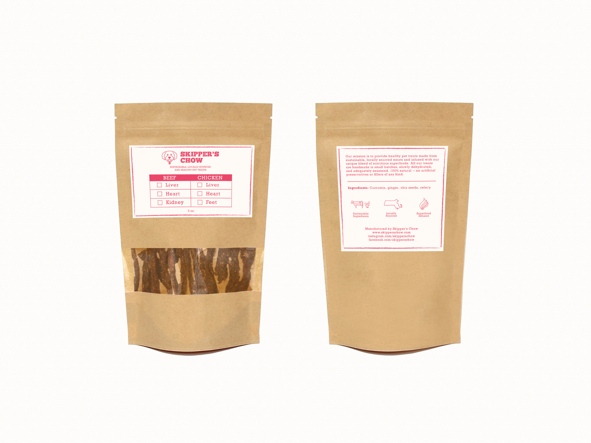
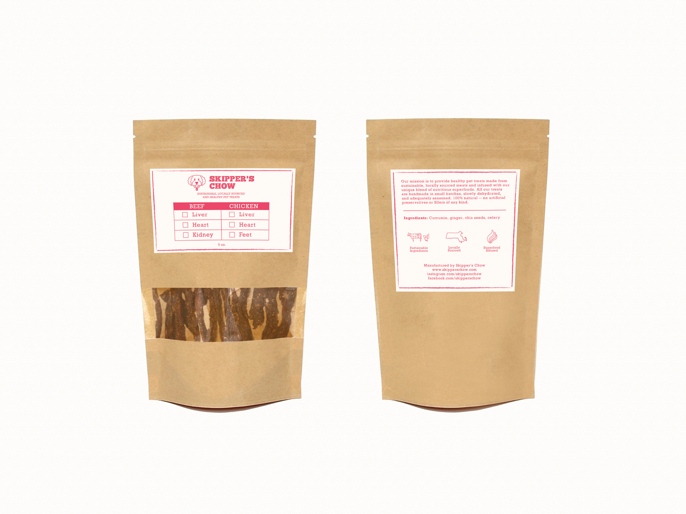

Skipper's Chow makes artisinal dog and cat treats with ingredients sourced from local farms that utilize sustainable farming practices.
I helped Skipper's Chow redesign their brand logo and product packaging to create a more professional, trustworthy and eye-catching brand identity. The significant upgrades made to their brand design and packaging helped them land placements at several popular farmer's markets across eastern Massachusetts.